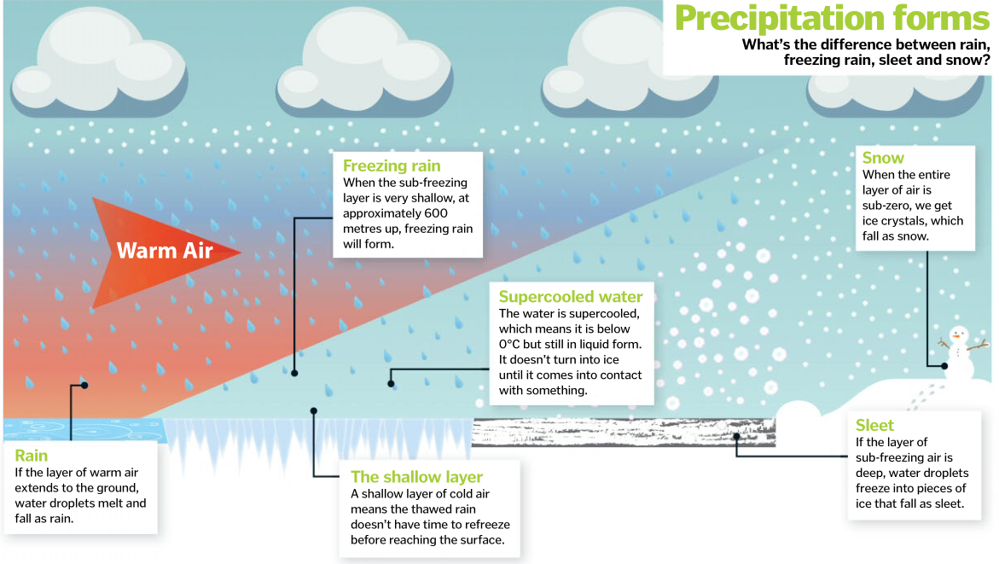

Freezing rain usually begins as snow, ice, sleet or hail. When it passes through a layer of warmer air, it melts and turns back into a liquid. However, if the rain travels through a shallow layer of cold air – with a temperature below freezing – as it continues to fall, this supercools the water droplets. When these droplets hit an object, such as a road, vehicle or tree, they freeze on impact, turning into ice. This can create dangerous driving conditions, and the weight of ice on power lines or trees can cause them to collapse. Thankfully, freezing rain is a rare occurrence in the UK, because conditions have to be so precise. The sub-freezing layer must be relatively shallow, at 600 metres above the surface.
What is freezing rain?...
